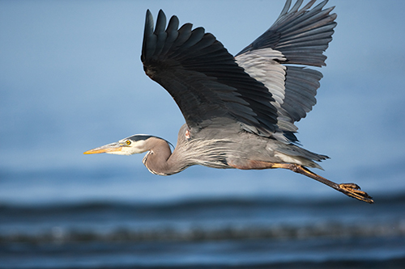

The Great Blue Heron is a large wading bird found in North America, often seen standing still in shallow water, waiting to catch fish. Known for its striking blue-gray plumage and long legs, this bird uses its sharp beak to snatch prey from the water. It’s commonly found near lakes, rivers, and wetlands.
